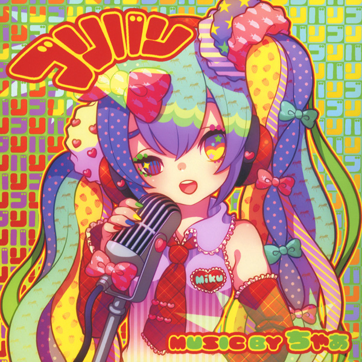
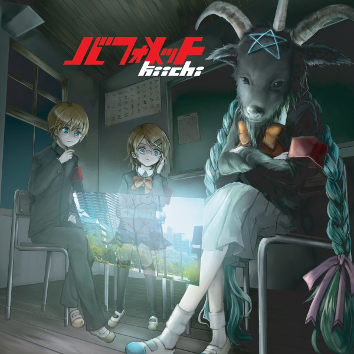
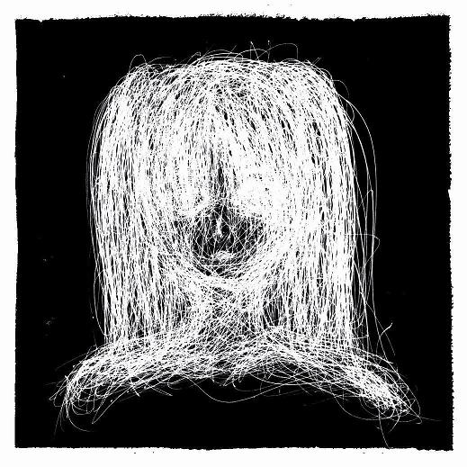
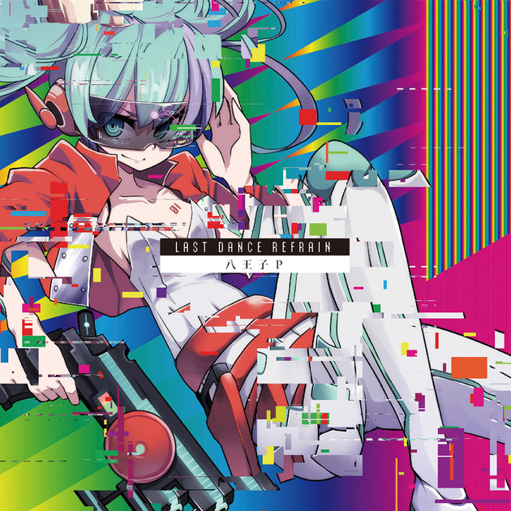
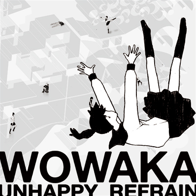
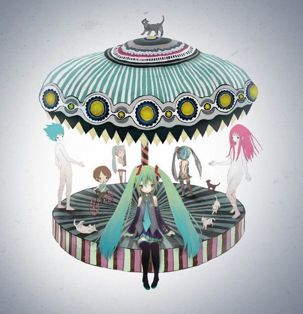
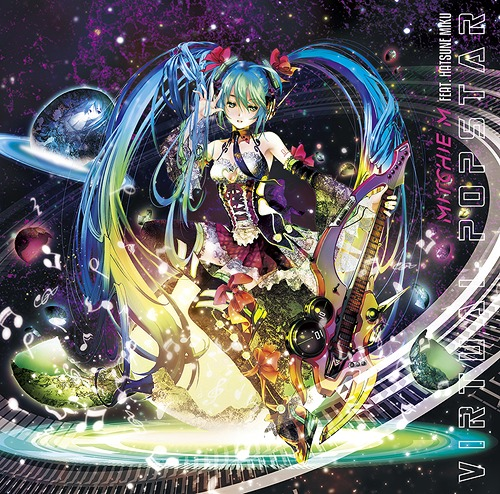
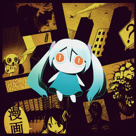

reag's vocaloid page
Last update: 10 January 2020
Welcome to my Vocaloid fanpage!! I originally got into Vocaloid back in 2010 or 2011, and it's been a downward descent ever since. There's a shit ton of Vocaloid producers and music out there, so I will probably update this with more stuff every now and then.
My favourite voicebanks are Hatsune Miku, Megurine Luka, and Kamui Gakupo. If it's okay to lump UTAU in too (I know it's seperate from Vocaloid, but most people group them together), I also love Gahata Meiji and Kasane Teto.
tbh I don't actually care for the Vocaloid fandom that much, I mostly just enjoy it as normal music. As a result, I've decided to dedicate this page to my favourite producers! However, I do also enjoy the Project Diva games and merch of the synth characters.
What is Vocaloid?
For those who are unaware of what Vocaloid is: no, it is not anime. Vocaloid is voice synthesis software developed by Yamaha, for which companies produce addons known as "voicebanks" that give the user different vocal options. The most widely-known voicebank is Hatsune Miku, produced by Crypton Future Media Inc from the voice of Saki Fujita. Users can utilise the software to create vocals for their own music, thus creating Vocaloid music.
It also goes a bit deeper than that, but that's the basics. Now, onto the real content of this page!
My intro to Vocaloid:
iirc my first intro to Vocaloid was, uh... an old Tumblr post where someone did a Homestuck version of MachigeritaP's Dark Woods Circus. Yep. Anyway, as a result I initially became familiar with the "Vocaloid horror" subgenre, which were usually featured around telling stories with spooky edgy themes.
Since I was probably 11-12ish at the time, I didn't really understand how to download just the music so I used to download the whole videos and put them on my iPod so I could listen on the go lol.
I've compiled a list of songs that I remember very well from this era, and compiled them in a playlist with the original videos (if they're still up):
Youtube playlist: here
- MachigeritaP - Dark Woods Circus
- MachigeritaP - On the Bottom of Red Swamp
- MachigeritaP - Madness; Because of Her Knowledge (aka. "Wide Knowledge of the Late, Madness")
- MachigeritaP - Rotten Girl, Grotesque Romance
- Chaa - Fear Garden
- ZawazawaP - Circle You, Circle You
- YugamiP - Alice of Human Sacrifice (this is actually a non-Vocaloid cover but I didn't know that for the longest time... I think it still deserves to be here lol)
- mothy - Daughter of Evil
- mothy - Servant of Evil
- mothy - Evil Food Eater Conchita
- mothy - The Lunacy of Duke Venomania
- Kikuo - Gomenne Gomenne
- Karasuyasabou - Jabberwocky Jabberwocky
- sunzriver - Reverse Rainbow
- ryo(supercell) - World Is Mine
- ryo(supercell) - Love Is War
- ryo(supercell) - Black Rock Shooter
- ryo(supercell) - Kocchi Muite Baby
- iroha(sasaki) - Meltdown
- wowaka - World's End Dancehall
- LamazeP - Triple Baka
- kemu - Reincarnation
- BuriruP - Secret Police
- OwataP - Paradichlorobenzene
- OwataP - Antichlorobenzene
- Hinata Haruhana - Nazotoki (aka "The Riddle Solver who Can't Solve Riddles")
- Hinata Haruhana - Nazokake (aka "The Riddle Solver who Won't Solve Riddles")
- Neru - Abstract Nonsense
- NishinP - Chronophobia
- Rocka - Funeral Nocturnal Luminescence
- UtsuP - Allegra
- Shokubai Phantom Girl - My Crush Was a Monster Boy
- OSTER project - Trick or Treat
- HitoshizukuP - Secret ~Black Oath~ (aka. "Alluring Secret ~Black Vow~")
It's probably good to note that a lot of videos on Youtube from this era of Vocaloid music were unauthorised reprints, had inaccurate translations, and did not credit the actual producers (usually songs were just credited as "Hatsune Miku" or w/e voicebank had been used). This whole landscape has really changed in the past 10 years -- a lot of producers now use Youtube to publish their own content, and viewers can now often add subtitles to the official videos instead of having to reupload with hardsubs.
Artists I enjoy:
|  |
Chaa / ちゃぁChaa is probably my all-time favourite Vocaloid producer. He generally produces very experimental electronic music, but hasn't actively produced much since 2010. His most well-known work is Kyoufuu Gaaden (Fear Garden), which was published in 2008. He has also released several albums (of which I own most!). Favourite songs: |
kiichi / NantokaP / なんとかPNiconico + Piapro + Youtube + Spotify Another electronic producer, Kiichi also creates experiemntal music but not to the extreme degree as Chaa. Chaa, Kiichi, and another electronic producer known as Treow actually collaborated on an EP titled ワクテカEP (Wakuteka EP) back in 2009. While Kiichi no longer creates music, he's still very active online and is now a game streamer. |
 |
|  |
Nashimoto Ui / 梨本ういA producer who creates rock music, usually with darker themes (ie. suicide). He's mostly known for "edgy" songs like Shinitagari (You Wanna Die?) and his distinctive tuning of Miku. Favourite songs: |
8#PRINCE / HachiojiP / 八王子PA very popular Vocaloid EDM producer. Interestingly, he actually contributed to a house compilation album titled Hammer alongside Chaa, Kiichi, and a number of other producers. His track, Reactor, has never appeared outside this album but it's definitely one of my favourite songs of his regardless. Favourite songs:
|
 |
 |
Camellia / かめりあNiconico + Piapro + Youtube + Spotify Another popular EDM producer, he's also known for a creating a lot of non-Vocaloid music as well. Favourite songs:
|
wowaka / ヲワカA widely popular producer who was active in 2009-2011. Unfortunately, he passed away in April 2019. His last album in which he used Vocaloid, Unhappy Refrain, has a ton of bops and almost the entire album consists of his most famous songs. Favourite songs: |
 |
|  |
Kikuo / きくおAn extremely popular producer known for upbeat songs with dark themes, often mixing a very high-pitched Miku with lyrics centered around topics like death and abuse. Favourite songs:
|
Mitchie MIn contrast to the rest of the producers on this list, Mitchie M is known for his very uplifting pop songs and distinguisable human-like tuning of Hatsune Miku. Favourite songs: |
 |
|  |
PinocchioPNiconico + Piapro + Youtube + Spotify Another popular producer. He tends to create very fast-paced and upbeat songs, usually with very colourful and eye-catching videos. Favourite songs: |
Compilation albums I like:


Other songs I like:
Youtube playlist: here (I got tired of individually linking everything)
- cosMo - RIP in the Gossip Sea
- Neru - Law-Evading Rock
- n.k - This Fucked-Up Wonderful World Exists For Me
- n.k - From yearning me, to blooming you
- emon(Tes.) - shake it!
- Nanou - Waltz of Anomalies
- Nanou - 3331
- CircusP - Like Whatever
- YuchaP - Blackjack
- mathru - Bacterial Contamination
- Hachi - Hold, Release; Demons and the Dead
- Hachi - Sand Planet
- Wanopo - Influencer Is Dead
- Wanopo - Remote Control
- Wanopo - Buraikku Jikorizer
- GigaP - ＋♂
- signalP - Cendrillon
- niki - GLIDE
- Deco*27 - Ghost Rule
- Deco*27 - Two Breaths Walking
- OSTER project - On the Rocks
- baker - Leave In Summer, Yet You're In My Fluffoughts